# Install packages
if (!requireNamespace("GGally", quietly = TRUE)) {
install.packages("GGally")
}
if (!requireNamespace("hrbrthemes", quietly = TRUE)) {
install.packages("hrbrthemes")
}
if (!requireNamespace("viridis", quietly = TRUE)) {
install.packages("viridis")
}
if (!requireNamespace("dplyr", quietly = TRUE)) {
install.packages("dplyr")
}
if (!requireNamespace("tidyr", quietly = TRUE)) {
install.packages("tidyr")
}
if (!requireNamespace("tibble", quietly = TRUE)) {
install.packages("tibble")
}
if (!requireNamespace("ggbump", quietly = TRUE)) {
install.packages("ggbump")
}
if (!requireNamespace("RColorBrewer", quietly = TRUE)) {
install.packages("RColorBrewer")
}
if (!requireNamespace("patchwork", quietly = TRUE)) {
install.packages("patchwork")
}
if (!requireNamespace("MASS", quietly = TRUE)) {
install.packages("MASS")
}
# Load packages
library(GGally)
library(hrbrthemes)
library(viridis)
library(dplyr)
library(tidyr)
library(tibble)
library(ggbump)
library(RColorBrewer)
library(patchwork)
library(MASS)Parallel Coordinates Plot
Parallel coordinate plots are a common method for visualizing high-dimensional multivariate data. To display a set of objects in a multidimensional space, multiple parallel and equally spaced axes are drawn, and the objects in the multidimensional space are represented as broken lines with vertices on the parallel axes. Although parallel line plots are a special type of line plot, they differ significantly from ordinary line plots. This is because parallel line plots are not limited to describing changes in one or a few trends. Parallel coordinate plots can be used to describe specific numerical values at different time points in a time series, at different gradients of reaction concentrations, and so on.
Example
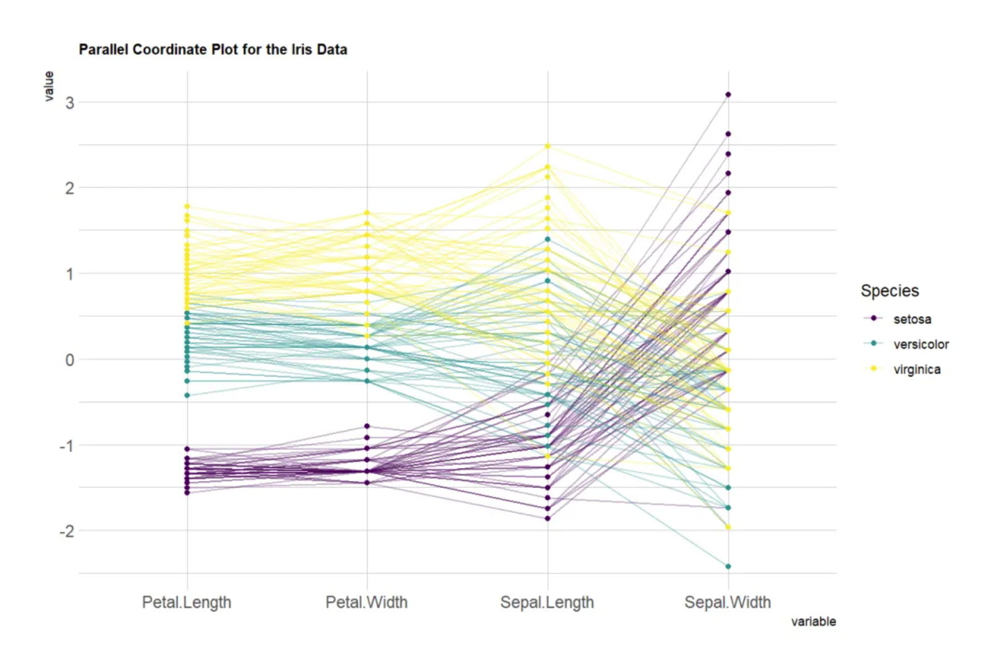
The position of a vertex on each axis corresponds to the variable value of that object along that dimension. This parallel coordinates plot, based on the Iris dataset, uses four variables (sepal and petal length and width) as the vertical axis. Each line represents a data point (a flower sample), and the line color indicates the flower category (Setosa, Versicolor, Virginica). Lines pass through the points on each axis, showing the sample’s value on each variable. By observing the trends and intersections of these lines, you can see the differences or similarities between different flower categories on these variables. If the lines do not cross, it means that the groups have similar performance on these variables; if they cross frequently, it means that the groups differ significantly on these variables.
Setup
System Requirements: Cross-platform (Linux/MacOS/Windows)
Programming Language: R
Dependencies:
GGally;hrbrthemes;viridis;dplyr;tidyr;tibble;ggbump;RColorBrewer;patchwork;MASS
Data Preparation
We used the R dataset iris and the TCGA-CHOL.methylation450.tsv from the UCSC Xena website (UCSC Xena (xenabrowser.net)).
# iris
data_iris <- iris
data_iris <- data_iris %>%
group_by(Species) %>%
sample_n(size = 20, replace = FALSE)
# TCGA-CHOL.methylation450
methylation_raw <- readr::read_tsv("https://bizard-1301043367.cos.ap-guangzhou.myqcloud.com/TCGA-CHOL.methylation450_.tsv")
methylation_selected <- methylation_raw[c(5,7,11),c(4:6)]
rownames(methylation_selected) <- c("cg236", "cg292", "cg658")
colnames(methylation_selected) <- substr(colnames(methylation_selected), 9, 12)
data_tcga <- methylation_selected %>%
rownames_to_column(var = "Composite") %>%
pivot_longer(cols = -Composite, names_to = "sample", values_to = "value")
data_tcga <- data_tcga %>%
mutate(sample = as.numeric(factor(sample))) # Convert the sample to a numerical valueVisualization
1. Basic Plotting
Use the ggparcoord() function of the ggally package, which is an extension of the ggplot2 package, to draw parallel plots.
1.1 Basic parallel graph
The input dataset must be a data frame with multiple numeric variables, each of which is used as the vertical axis on the plot. The number of columns for these variables is specified in the columns argument of the function. Here, the categorical variables used to color the lines are specified in the groupColumn argument.
# Basic parallel graph
p <- ggparcoord(data_iris, columns = 1:4, groupColumn = 5)
p
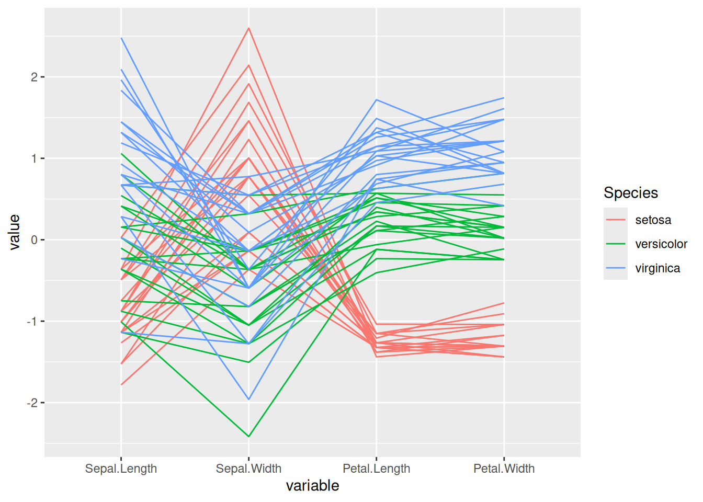
This parallel coordinate graph shows the relationship between sepal length, sepal width, petal length, and petal width in the iris dataset. Each line represents a sample, and the flower category specified by groupColumn is used to distinguish the colors of the lines.
1.2 Customize colors, themes, and overall appearance
This chart is essentially the same as the previous one, but with the following customizations:
- Use the
viridispackage to change the palette colors - Use
titleto add a title and customizetheme - Use
showPointsto add points - Use
alphaLinesto change the line transparency - Use
theme_ipsum()to use the theme
# Customize colors, themes, and overall appearance
p <- ggparcoord(data_iris,
columns = 1:4, groupColumn = 5, order = "anyClass",
showPoints = TRUE,
title = "Parallel Coordinate Plot for the Iris Data",
alphaLines = 0.3) +
scale_color_viridis(discrete=TRUE) +
theme_ipsum()+
theme(plot.title = element_text(size=10))
p
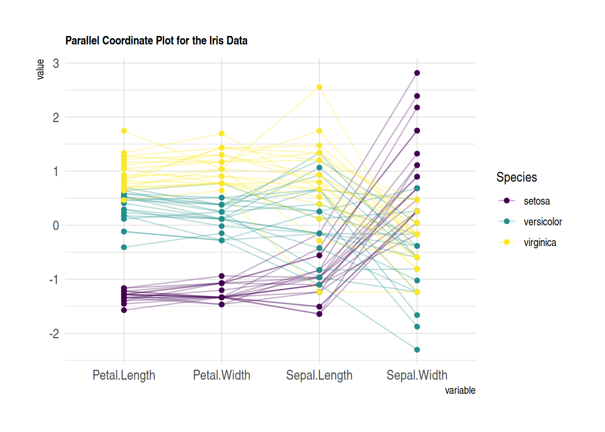
This parallel coordinates plot shows the relationship between sepal length, sepal width, petal length, and petal width in the iris dataset. Custom images are used to make the image more beautiful and easy to read.
1.3 Standardization
Standardization transforms raw data so that it can be compared with other variables. This is a crucial step in comparing variables that do not have the same units.
The ggally package provides a scale parameter scale. Below are four possible options applied to the same dataset:
-
globalminmax→ No normalization -
uniminmax→ Normalize to minimum = 0 and maximum = 1 -
std→ Univariate normalization (subtract mean and divide by standard deviation) -
center→ Normalize and center the variable (variables are centered at zero)
# No standardization
p1 <- ggparcoord(data_iris,
columns = 1:4, groupColumn = 5, order = "anyClass",
scale="globalminmax",
showPoints = TRUE,
title = "No scaling",
alphaLines = 0.3
) +
scale_color_viridis(discrete=TRUE) +
theme_ipsum()+
theme(
legend.position="none",
plot.title = element_text(size=13)
) +
xlab("")
# Standardize to Min = 0 and Max = 1
p2 <- ggparcoord(data_iris,
columns = 1:4, groupColumn = 5, order = "anyClass",
scale="uniminmax",
showPoints = TRUE,
title = "Standardize to Min = 0 and Max = 1",
alphaLines = 0.3
) +
scale_color_viridis(discrete=TRUE) +
theme_ipsum()+
theme(
legend.position="none",
plot.title = element_text(size=13)
) +
xlab("")
# Normalize univariately
p3 <- ggparcoord(data_iris,
columns = 1:4, groupColumn = 5, order = "anyClass",
scale="std",
showPoints = TRUE,
title = "Normalize univariately (substract mean & divide by sd)",
alphaLines = 0.3
) +
scale_color_viridis(discrete=TRUE) +
theme_ipsum()+
theme(
legend.position="none",
plot.title = element_text(size=13)
) +
xlab("")
# Standardize and center variables
p4 <- ggparcoord(data_iris,
columns = 1:4, groupColumn = 5, order = "anyClass",
scale="center",
showPoints = TRUE,
title = "Standardize and center variables",
alphaLines = 0.3
) +
scale_color_viridis(discrete=TRUE) +
theme_ipsum()+
theme(
legend.position="none",
plot.title = element_text(size=13)
) +
xlab("")
p1 + p2 + p3 + p4 + plot_layout(ncol = 2)
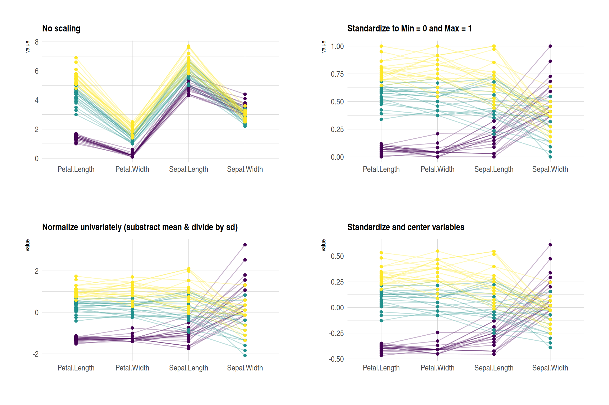
These four plots show the effects of different normalization methods on the iris dataset:
- No scaling：Displays the original data, with each variable retaining its original range. Variables with larger differences in numerical ranges are more significant.
- Standardize to Min = 0 and Max = 1：The values of all variables are scaled to the same range (0 to 1) to facilitate comparison of the changing trends of different variables.
- Normalize univariately：Each variable was standardized to have a mean of 0 and a standard deviation of 1 to highlight the relative differences in the data.
- Standardize and center variables：The data were mean-centered to highlight the relative differences between different groups on each variable.
These graphs use colors to distinguish different flower species, and lines to represent the values of each sample on different variables.
1.4 Highlight Group
If you are interested in a specific group, you can highlight different categories by changing their colors:
# Highlight Group
p <- data_iris %>%
arrange(desc(Species)) %>%
ggparcoord(
columns = 1:4, groupColumn = 5, order = "anyClass",
showPoints = TRUE,
title = "Original",
alphaLines = 1
) +
scale_color_manual(values=c( "#69b3a2", "#E8E8E8", "#E8E8E8") ) + # Highlight specific groups by changing the colors of different categories
theme_ipsum()+
theme(
legend.position="Default",
plot.title = element_text(size=10)
) +
xlab("")
p
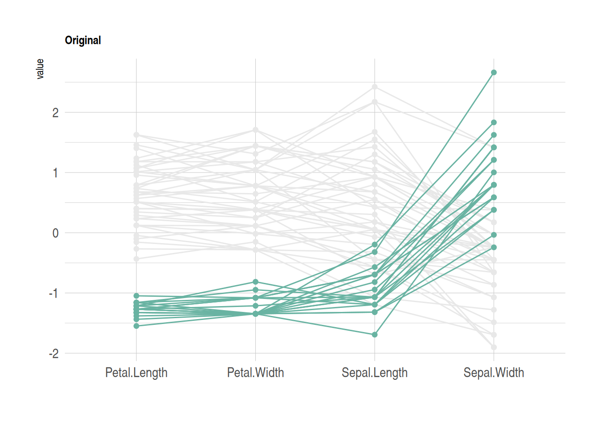
This figure shows how different flower species from the iris dataset perform on four features (sepal length, sepal width, petal length, and petal width). Parallel coordinates are used to display the values of each sample on these variables. By sorting and coloring the samples in descending order by species, the Setosa species is highlighted in green, while the other two species are shown in gray. The lines represent the samples, showing how their values vary across the different features.
2. MASS package
2.1 Basic parallel plots (MASS package)
Use the MASS package to construct a parallel coordinates plot. Note that using ggplot2 might be a better choice.
my_colors <- colors()[as.numeric(data_iris$Species) * 11]
parcoord(data_iris[, c(1:4)], col = my_colors)
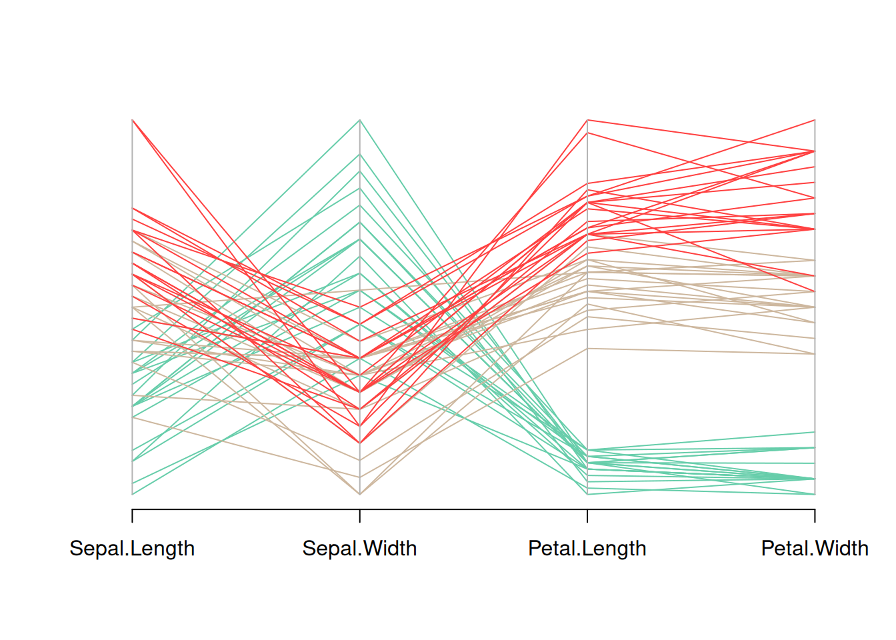
This figure is a parallel coordinate plot of the Iris dataset, showing the distribution of the four variables in the dataset (sepal length, sepal width, petal length, and petal width). Different flower species are distinguished by different colors. By observing the trends of the different colored lines, we can see the different patterns of these variables among different flower species.
2.2 Add legend
Use legend() to add a legend.
my_colors <- colors()[as.numeric(data_iris$Species) * 11]
parcoord(data_iris[, c(1:4)], col = my_colors)
legend("topright",
legend = levels(data_iris$Species),
col = unique(my_colors),
pch = 1) # Add legend
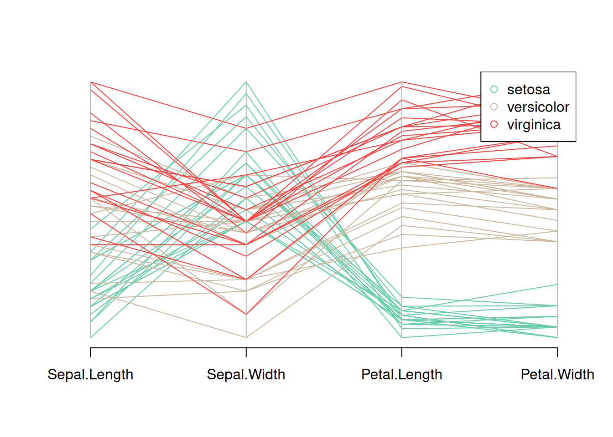
This figure is a parallel coordinate plot of the Iris dataset, showing the distribution of the four variables in the dataset (sepal length, sepal width, petal length, and petal width). Different flower species are distinguished by different colors, and a legend is provided. By observing the trends of the different colored lines, you can see the different patterns of these variables for each flower species.
2.3 Reorder variables
It is very important to find the optimal order of variables in the parallel coordinates plot. To change it, just change the order in the input dataset.
palette <- brewer.pal(3, "Set1")
my_colors <- palette[as.numeric(data_iris$Species)]
parcoord(data_iris[,c(1,3,4,2)] , col= my_colors)
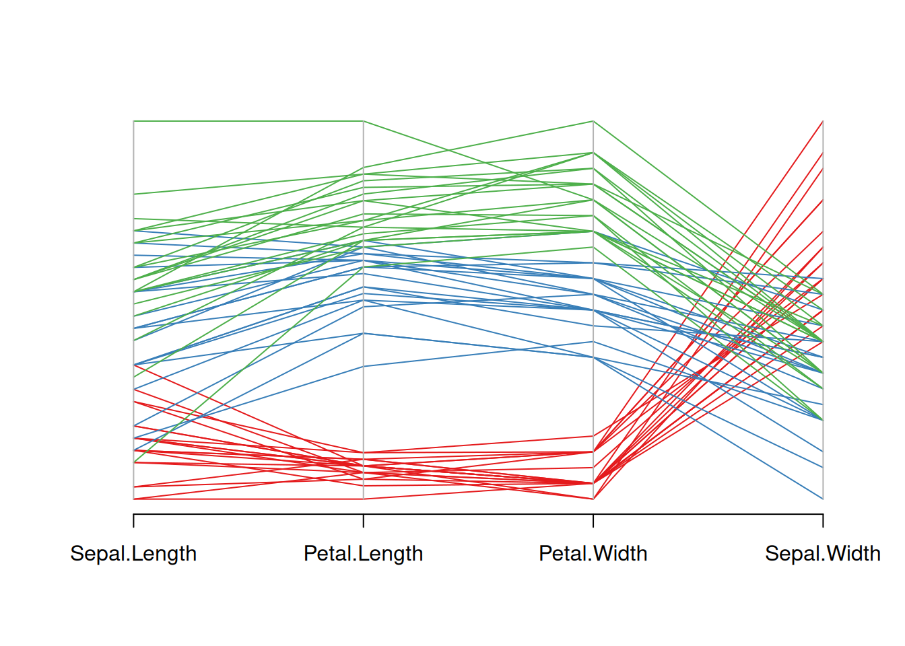
This figure is a parallel coordinate plot of the Iris dataset, showing the distribution of four variables: sepal length, petal length, petal width, and sepal width. Different flower species are represented by three different colors. By observing the changes in the color lines, we can see the different trends in these variables among different flower species. Reordering the variables in the input dataset reorders the variables.
2.4 Highlight Group
If you are interested in a specific group, you can change the color to highlight that group.
isSetosa <- ifelse(data_iris$Species=="setosa","red","grey")
parcoord(data_iris[,c(1,3,4,2)] , col=isSetosa)
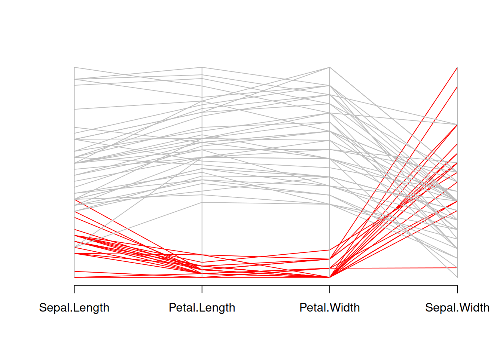
This graph is a parallel coordinate plot of the Iris dataset, where setosa is shown in red and other species in gray. This graph visually illustrates the differences in sepal length, petal length, petal width, and sepal width between setosa and other species.
3. Bump plot
A bump plot is a type of chart that can visually display trends and is often used to compare different categories of data.
3.1 Basic bump plot
p <- ggplot(data_tcga, aes(x = sample, y = value, color = Composite)) +
geom_bump(size = 2) +
theme_minimal()
p
This figure shows the methylation trends of different composites (cg236, cg292, and cg658) across different samples. The colors distinguish the different composite groups, and the lines represent each group’s performance across different samples. The fluctuations of the lines reveal the trend and relative differences in the values of each group across samples.
3.2 Change color
It is possible to add individual points to a bump map. This can be achieved by adding a geom_point() layer. Bump maps are drawn using the ggbump package.
p <- ggplot(data_tcga, aes(x = sample, y = value, color = Composite)) +
geom_bump(size = 2) +
geom_point(size = 6) +
scale_color_brewer(palette = "Paired") +
theme_minimal()
p
This graph shows the methylation trends of different composites (cg236, cg292, and cg658) across different samples. Colors are used to distinguish different composite groups, and lines represent the performance of each group across different samples. The fluctuations of the lines reveal the trend and relative differences in the values of each group across samples. Adding points and changing the colors makes the graph more visually appealing and easy to read.
3.3 Add labels and titles
geom_text() and the function labs() can be used to add labels and titles to plots.
p <- ggplot(data_tcga, aes(x = sample, y = value, color = Composite)) +
geom_bump(size = 2) +
geom_point(size = 6) +
geom_text(aes(label = Composite), nudge_y = -0.01, fontface = "bold", size=3) +
scale_color_brewer(palette = "Paired") +
theme_minimal() +
labs(title = "Bump Plot of Methylation Values",
x = "Sample", y = "Value")
p
This figure shows the methylation variation of different composites (cg236, cg292, and cg658) across different samples. The lines represent the numerical trend of each composite across samples, the dots represent the specific values, and the labels indicate the composite’s name. The colors distinguish the different composites, and the fluctuations in their values across samples can be seen through the lines.
Applications
1. Basic Parallel Graph
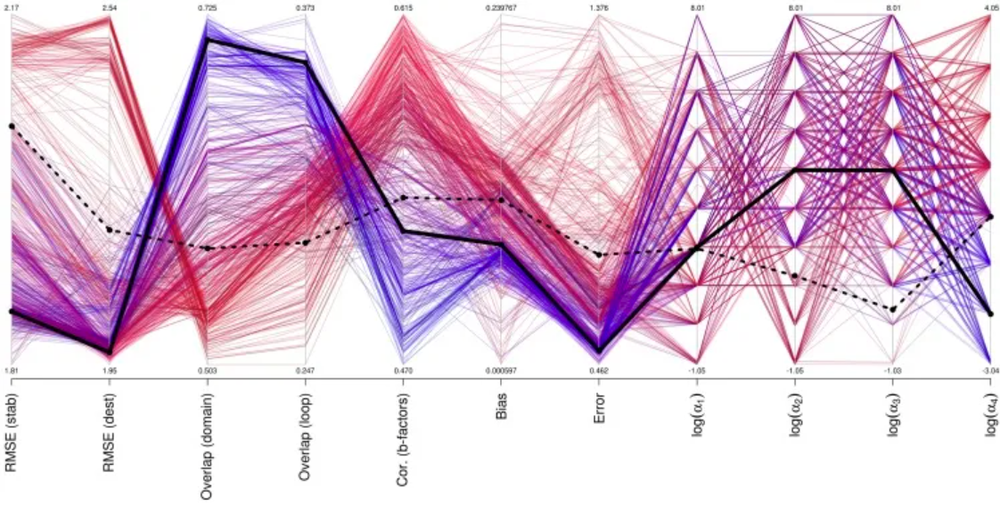
Performance of different parameter sets for mutation, b-factor, and motion prediction. [1]
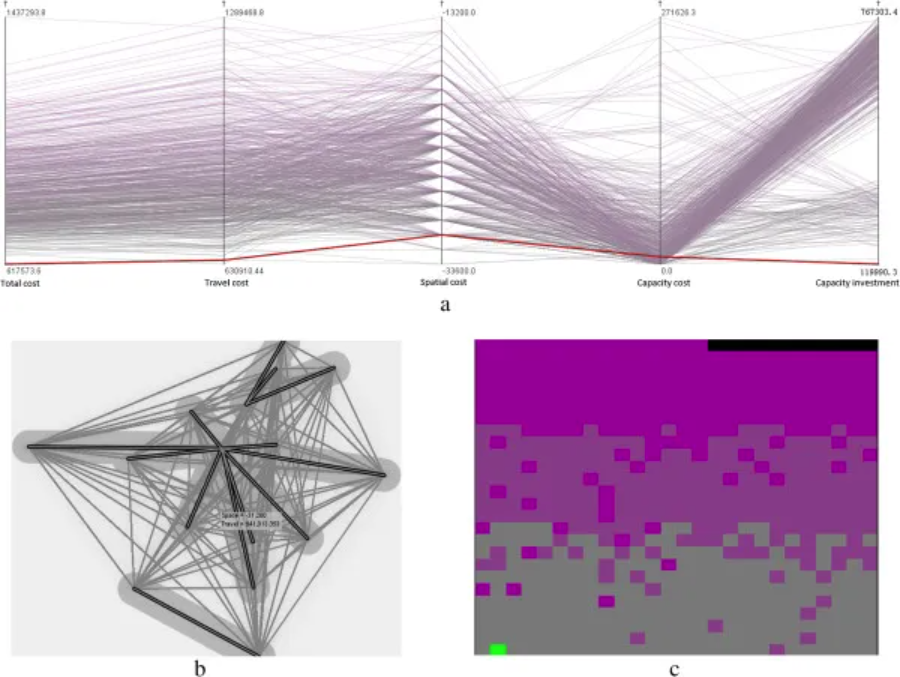
Selecting the optimal healthcare center in a mixed transportation network using (a) a parallel coordinate plot, (b) a bivariate geographic map, and (c) a space-filling raster. (Note: Two variables, total cost and travel cost, are visualized in the space-filling raster. Total cost is represented by a gray-to-purple color ramp, and travel cost is sorted from left to right and from bottom to top using a sweeping line.) [2]
2. Faceted Parallel Graph
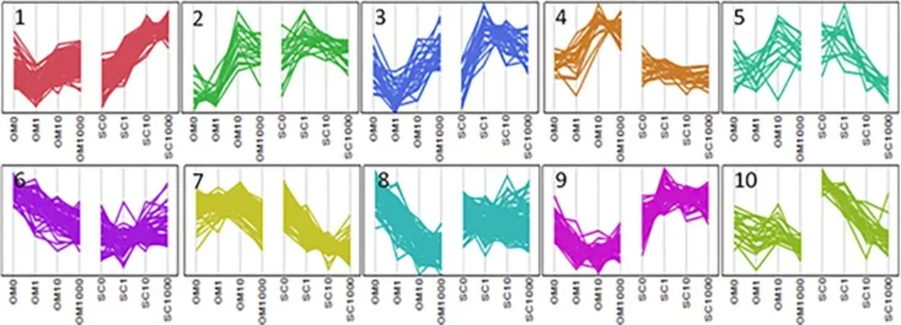
Parallel plots illustrate cluster analysis of genes exhibiting Depot*[Dex] interactions. [3]
Reference
[1] Frappier V, Najmanovich RJ. A coarse-grained elastic network atom contact model and its use in the simulation of protein dynamics and the prediction of the effect of mutations. PLoS Comput Biol. 2014 Apr 24;10(4):e1003569. doi: 10.1371/journal.pcbi.1003569. PMID: 24762569; PMCID: PMC3998880.
[2] Jia T, Tao H, Qin K, Wang Y, Liu C, Gao Q. Selecting the optimal healthcare centers with a modified P-median model: a visual analytic perspective. Int J Health Geogr. 2014 Oct 22;13:42. doi: 10.1186/1476-072X-13-42. PMID: 25336302; PMCID: PMC4293817.
[3] Pickering RT, Lee MJ, Karastergiou K, Gower A, Fried SK. Depot Dependent Effects of Dexamethasone on Gene Expression in Human Omental and Abdominal Subcutaneous Adipose Tissues from Obese Women. PLoS One. 2016 Dec 22;11(12):e0167337. doi: 10.1371/journal.pone.0167337. PMID: 28005982; PMCID: PMC5179014.
[4] Schloerke, B., Crowley, J., Cook, D., Hofmann, H., Wickham, H. (2021). GGally: Extension to ‘ggplot2’. https://cran.r-project.org/package=GGally
[5] Rudis, B. (2020). hrbrthemes: Additional Themes and Theme Components for ‘ggplot2’. https://cran.r-project.org/package=hrbrthemes
[6] Garnier, S. (2018). viridis: Colorblind-Friendly Color Maps for R. https://cran.r-project.org/package=viridis
[7] Wickham, H., François, R., Henry, L., Müller, K. (2023). dplyr: A Grammar of Data Manipulation. https://cran.r-project.org/package=dplyr
[8] Wickham, H., Henry, L. (2023). tidyr: Tidy Messy Data. https://cran.r-project.org/package=tidyr
[9] Müller, K. (2023). tibble: Simple Data Frames. https://cran.r-project.org/package=tibble
[10] Aumayr, A., & Münch, B. (2022). ggbump: Bump Charts with ggplot2. https://cran.r-project.org/package=ggbump
[11] Neuwirth, E. (2023). RColorBrewer: ColorBrewer Palettes. https://cran.r-project.org/package=RColorBrewer